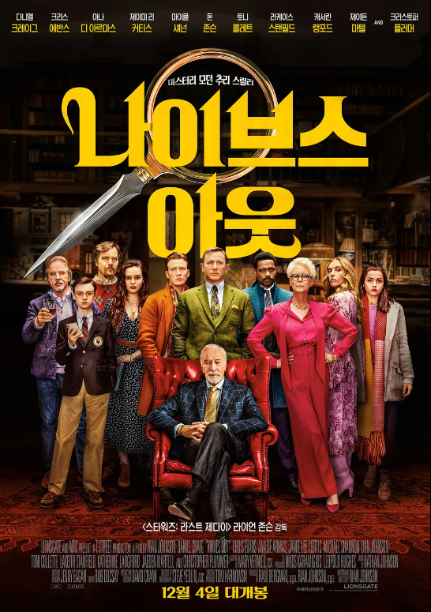

해외영화
-
위키드
감독 : 존 추
배우 : 신시아 에리보, 아리아나 그란데
판타지 | 160분
전체 관람가
24.11.20 개봉
-
모아나2
감독 : 데이브 데릭 주니어
성우 : 김수연, 이장원
애니메이션 | 100분
전체 관람가
24.11.27 개봉
-
글래디 에이터 II
감독 : 리들리 스콧
배우 : 폴 메스칼, 페드로 파스칼
액션 | 148분
청소년 관람불가
24.11.13 개봉
-
서브 스턴스
감독 : 코랄리 파르자
배우 : 데미 무어, 마거릿 퀄리
공포 | 141분
청소년 관람불가
24.12.11 개봉
- 
나이브스 아웃
감독 : 라이언 존슨
배우 : 다니엘 크레이그, 크리스 에반스
미스터리 | 13분
12세 관람가
24.12.4 개봉
-
블루 자이언트
감독 : 타치카와 유즈루
배우 : 야마다 유키, 마미야 쇼타로
드라마 | 119분
12세 관람가
24.12.18 개봉
-
클로즈 유어 아이즈
감독 : 빅토르 에리세
배우 : 마놀로 솔로, 아나 토렌트
드라마 | 169분
12세 관람가
24.11.6 개봉
-
더크로우
감독 : 루퍼트 샌더스
배우 : 빌 스카스가드, 대니 휴스턴
액션 | 111분
청소년 관람불가
24.12.11 개봉
-
애시드 레인:죽음의 비
감독 : 저스트 필리포
배우: 기욤 카네, 레티티아 도슈
스릴러 | 100분
15세 관람가
24.11.27 개봉